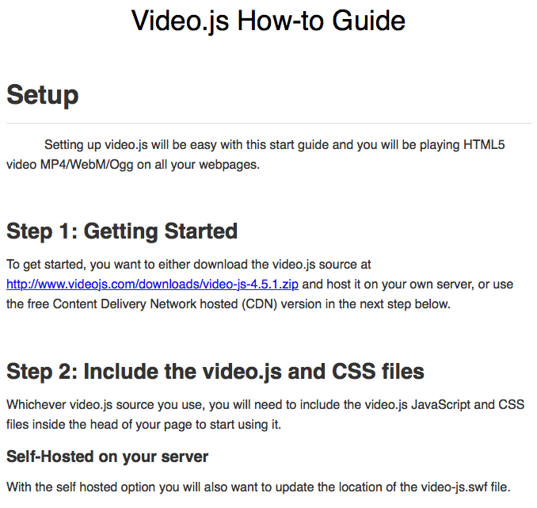

Dark Theme
Light Theme
Basic AJAX and Error Handling
JavaScript Muliplication Table
Local Storage and Error Handling
Book Ordering via PHP & MySQL Database Interaction
Session Handling, Posts, and Gets
Video.js How-to Guide

New York Times Article Search Web App
Bucket List Web App